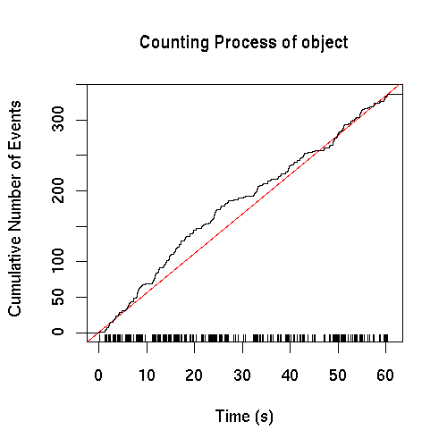
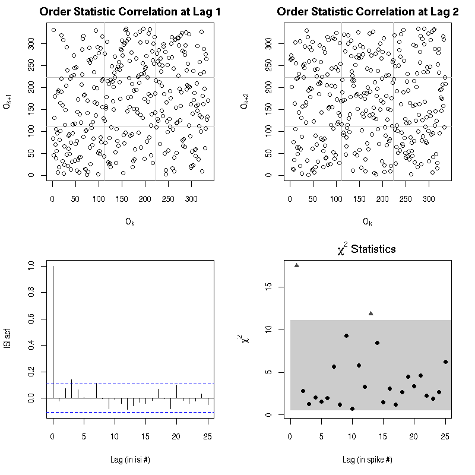
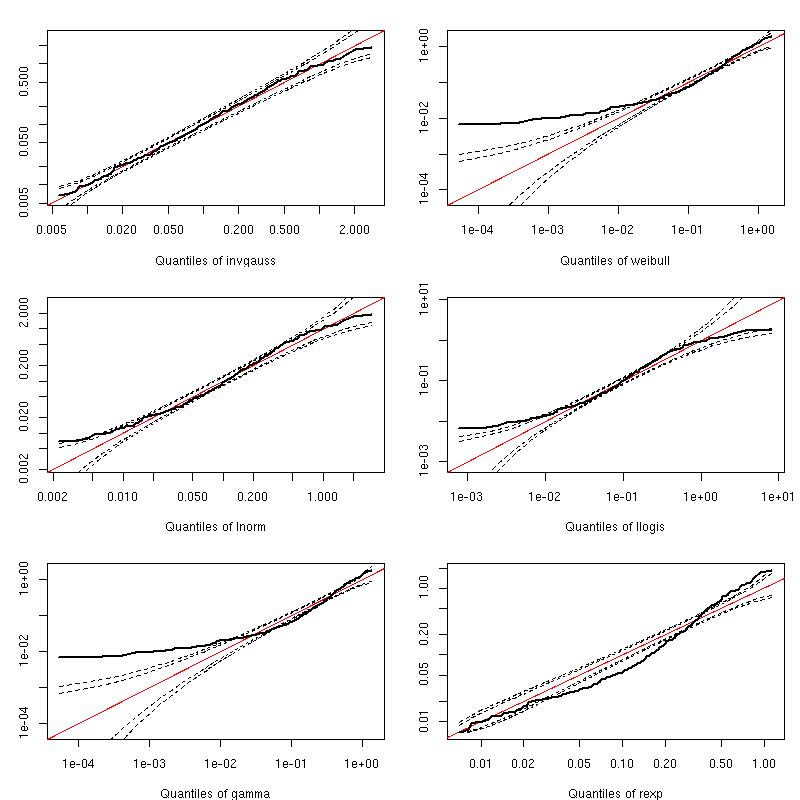
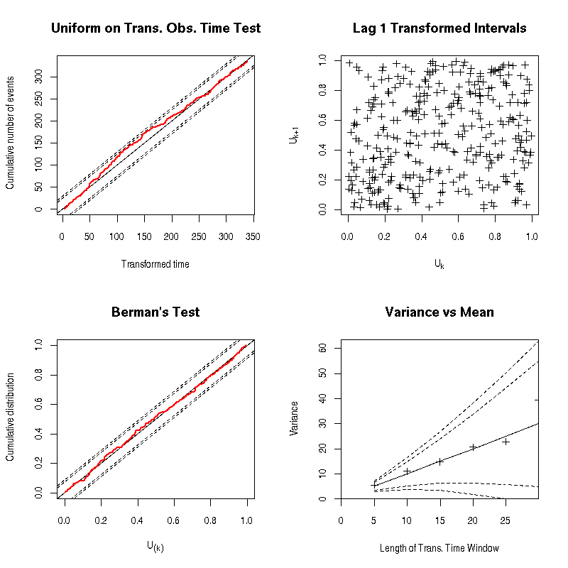

e070528spontN1
Spike train plot of e070528spontN1

Short summary of e070528spontN1
A spike train with 336 events, starting at: 0.212 and ending at: 60.417 (s).
The mean ISI is: 0.18 and its SD is: 0.266 (s).
The shortest interval is: 0.007 and the longest is: 1.871 (s).
Renewal test of e070528spontN1

The best model with 2 parameters is: invgauss.
Its estimated parameters values and associated se are:
| mu | sigma2 |
| mean | 0.180 | 16.272 |
| se | 0.017 | 1.257 |
|
Model comparison for e070528spontN1

Ogata's tests after time transformation of e070528spontN1 using a invgauss model

Cross-Intensity with neuron 2 as a test train
GAM fit summary (pre-binning bin width, 0.008, k=61, bs="cr"):
Family:poisson
Link function:log
Formula:
Count ~ s(Time, k = k, bs = bs)
Parametric coefficients:
| Estimate | std.err. | t ratio | Pr(>|t[) |
| (Intercept) | 3.9041 | 0.01806 | 216.1 | < 2.22e-16 |
|
Approximate significance of smooth terms:
| edf | chi.sq | p-value |
| s(Time) | 5.071 | 39.12 | 5.0541e-05 |
|
Adjusted r-sq. = 0.382 GCV score =
Scale estimate = 1 n = 62
GAM goodness of fit diagnostics:

Smoothed and "classical" cross-intensity plots:

Cross-Intensity with neuron 3 as a test train
GAM fit summary (pre-binning bin width, 0.005, k=98, bs="cr"):
Family:poisson
Link function:log
Formula:
Count ~ s(Time, k = k, bs = bs)
Parametric coefficients:
| Estimate | std.err. | t ratio | Pr(>|t[) |
| (Intercept) | 3.9566 | 0.01384 | 286 | < 2.22e-16 |
|
Approximate significance of smooth terms:
| edf | chi.sq | p-value |
| s(Time) | 3.33 | 16.38 | 0.021863 |
|
Adjusted r-sq. = 0.129 GCV score =
Scale estimate = 1 n = 100
GAM goodness of fit diagnostics:

Smoothed and "classical" cross-intensity plots:

Cross-Intensity with neuron 4 as a test train
GAM fit summary (pre-binning bin width, 0.009, k=54, bs="cr"):
Family:poisson
Link function:log
Formula:
Count ~ s(Time, k = k, bs = bs)
Parametric coefficients:
| Estimate | std.err. | t ratio | Pr(>|t[) |
| (Intercept) | 3.9055 | 0.01913 | 204.1 | < 2.22e-16 |
|
Approximate significance of smooth terms:
| edf | chi.sq | p-value |
| s(Time) | 1.876 | 4.8967 | 0.29806 |
|
Adjusted r-sq. = 0.0718 GCV score =
Scale estimate = 1 n = 55
GAM goodness of fit diagnostics:

Smoothed and "classical" cross-intensity plots:

Generated on: Mon Oct 29 14:23:04 2007 - R2HTML